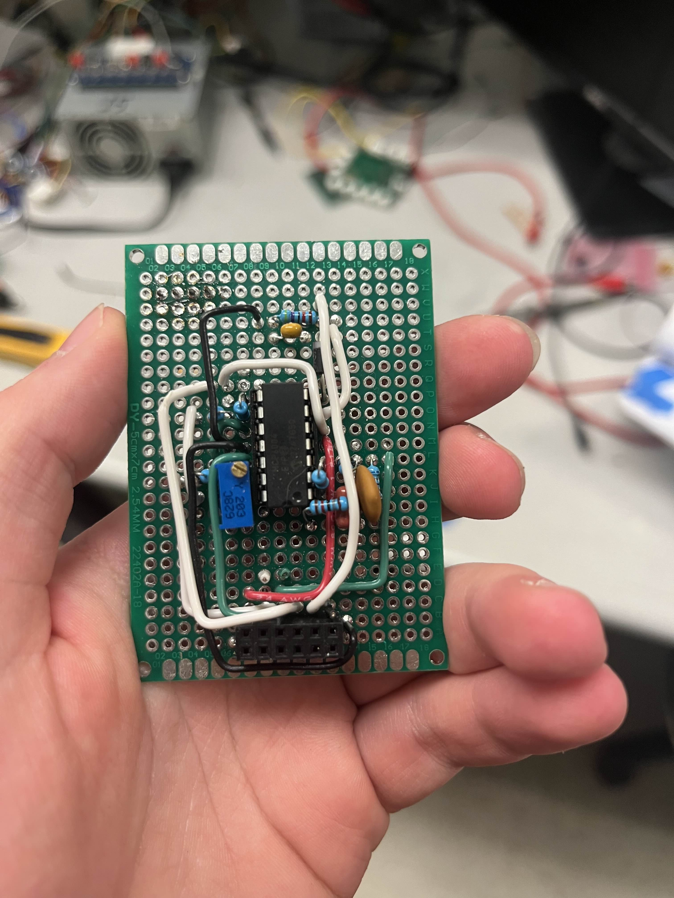
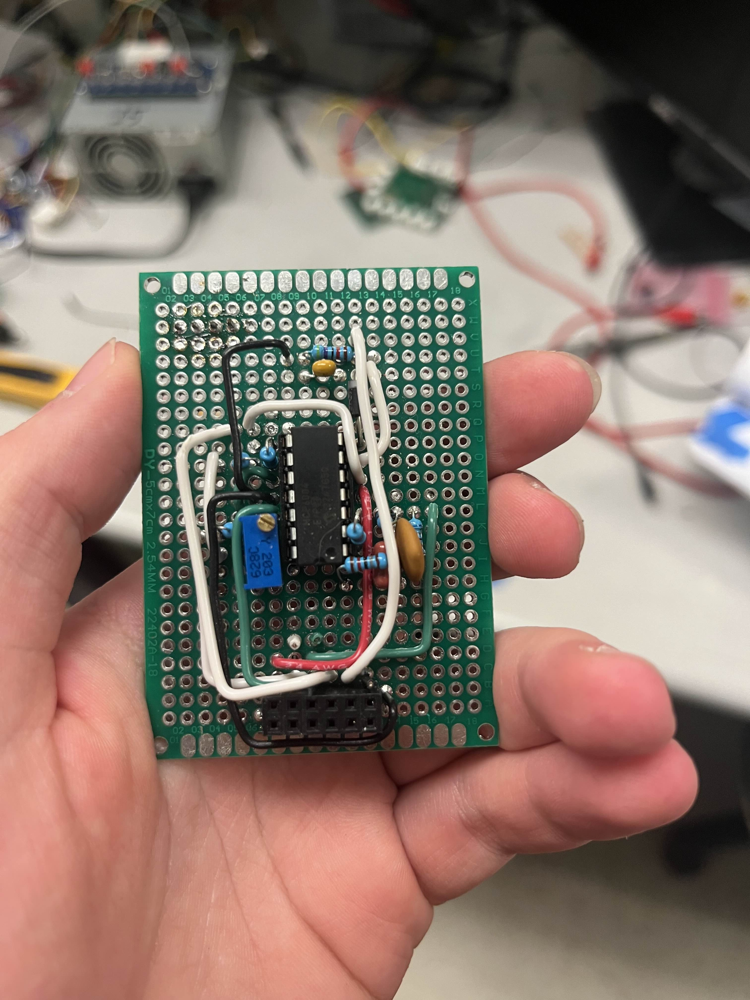

E.D.D.I.E. features a tank-style drivetrain powered by two DC motors, distributing power via a gear-based system for improved torque, reliability, and efficiency. The initial belt-driven design was replaced due to maintenance and performance issues. A custom gearbox further increased torque using a 2:1 gear ratio. The turret, designed for two degrees of freedom, originally launched spherical projectiles but was later optimized with flat-ended cylindrical projectiles for consistent firing. Early chassis prototypes were laser-cut from plywood, then upgraded to acrylic for improved strength and precision. The modular chassis layout evolved to enhance internal space and wiring organization, greatly improving ease of assembly and maintenance.
- Two 12V DC motors
- Two MG996R Servo Motors
- One 3.3V DC motor

 
